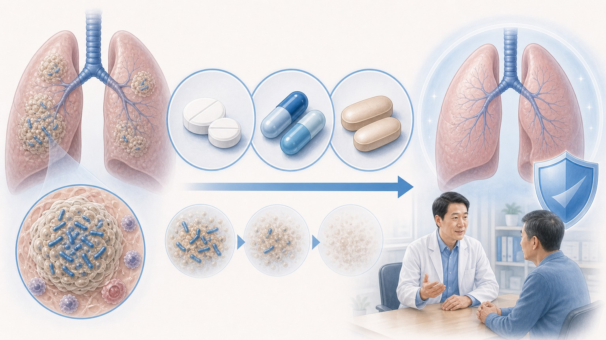
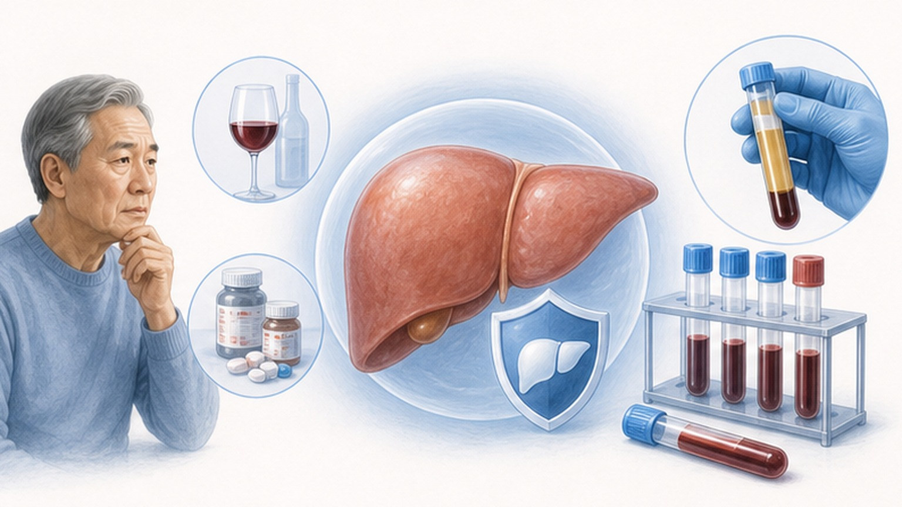
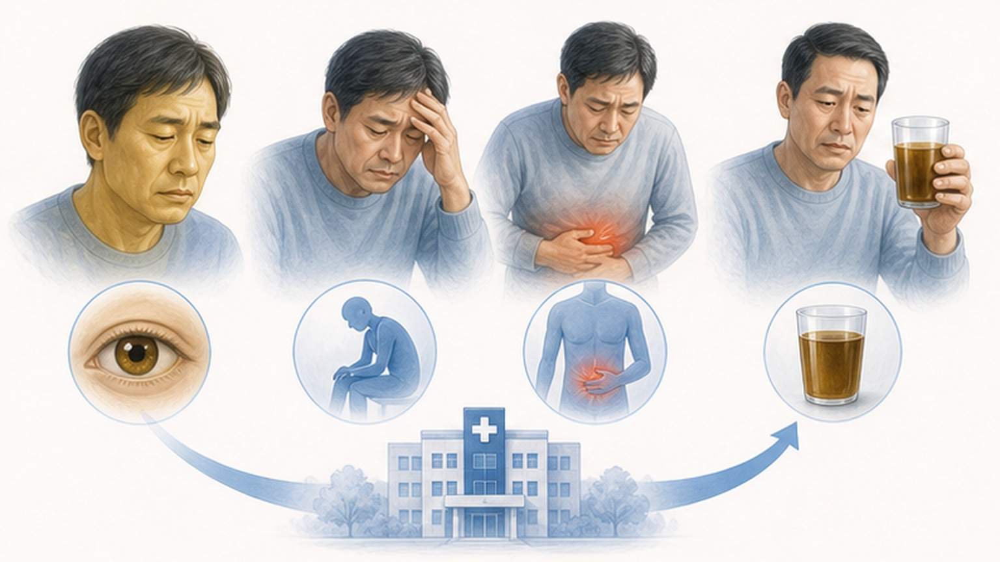
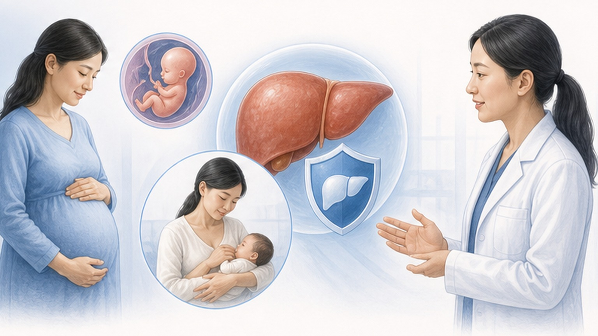

PATIENT EDUCATION · INFECTIOUS DISEASE
잠복결핵감염 치료,
3~9개월의 정확한 복용
잠복결핵감염 (Latent Tuberculosis Infection, LTBI) 치료 요법·간독성·약물상호작용 가이드
02
CHAPTER 01 · OVERVIEW
짧은 치료로 평생 결핵을 예방합니다
잠복결핵감염 치료의 핵심 — 단기 복용으로 활동성 결핵 발병 위험을 크게 낮춥니다
60–90%
예방 효과
치료 완주 시 결핵 발병 위험 감소
3
권고 요법
3HP · 4R · 9H — 환자 상태에 맞춰 선택
0%
본인부담
건강보험 산정특례 (V010) 적용
잠복결핵감염은 결핵균이 몸에 존재하지만 잠자는 상태로 — 증상도 전염력도 없습니다. 그러나 평생 5~10% 확률로 활동성 결핵 (Active TB) 으로 진행할 수 있어, 단기 약물 치료로 미리 균을 제거하는 것이 표준 진료입니다. 잠복결핵 자체에 대한 자세한 내용은 LTBI 개요 자료를 참고해 주세요.
03
CHAPTER 02 · REGIMENS
3가지 표준 치료 요법 한눈에 비교
3HP · 4R 은 1차 권고 / 9H 는 대안 — 간 기능, 동반 약물, 임신 여부에 따라 의료진이 결정
| 구분 | 3HP이소니아지드 (Isoniazid, INH) + 리파펜틴 (Rifapentine), 주 1회 | 4R리팜핀 (Rifampin), 1일 1회 | 9H이소니아지드 (Isoniazid) 단독, 1일 1회 |
|---|---|---|---|
| 복용 기간 | 3개월 (12회 / 주 1회) | 4개월 (120일 / 매일) | 9개월 (270일 / 매일) |
| 한국 권고 | 1차 권고 | 1차 권고 | 대안 |
| 치료 완료율 | 약 87% (가장 높음) | 78.8% | 63.2% (가장 낮음) |
| 심한 간독성 | 약 0.4% (낮음) | 0.3% (가장 낮음) | 약 2.0% (가장 높음) |
| 약물상호작용 | 리파펜틴 — CYP3A4 강력 유도 | 리팜핀 — CYP3A4 강력 유도 | 적은 편 (CYP 영향 적음) |
04
CHAPTER 03 · DRUG PROFILE
사용되는 핵심 약물 3가지
각 약물의 작용·복용법·대표 부작용을 미리 알아두면 안전한 치료에 큰 도움이 됩니다
DRUG · 01
이소니아지드 (Isoniazid, INH)
결핵균 세포벽 합성 차단. 1일 1회 공복 복용 (식전 1시간 또는 식후 2시간). 대표 부작용 — 간독성, 말초신경병증 (피리독신/B6 동시 복용으로 예방). 등푸른 생선·발효식품 섭취 후 홍조·두통이 생길 수 있습니다.
- 성인 용량300 mg / 1일 1회
- B6 (피리독신)25–50 mg 동시
DRUG · 02
리팜핀 (Rifampin, RIF)
결핵균 RNA 중합효소 억제. 1일 1회 공복 복용. 체액(소변·눈물·땀·침)이 주황~붉은색으로 변하는 것은 정상 — 약을 끊으면 사라집니다. 콘택트렌즈는 영구 착색될 수 있으니 안경 또는 일회용 렌즈 권장.
- 성인 용량600 mg / 1일 1회
- 제산제와 간격1시간 이상
DRUG · 03
리파펜틴 (Rifapentine, RPT)
리팜핀 계열의 장시간 작용 약물 — 주 1회 복용이 가능한 이유입니다. 3HP 요법에서 이소니아지드와 함께 사용. 음식과 함께 복용 시 흡수 향상. 리팜핀과 동일하게 CYP3A4 강력 유도제로 약물상호작용 주의가 필요합니다.
- 성인 용량900 mg / 주 1회
- 복용 시기식사와 함께

05
CHAPTER 04 · LFT MONITORING
간 기능 검사 (LFT) 모니터링 일정
약 시작 전 기저 검사 후 정기 추적 — 무증상 간독성을 조기에 발견하기 위한 표준 일정
BASELINE
치료 시작 전
AST · ALT · 총빌리루빈 · CBC · 크레아티닌 · HBV/HCV 선별. 흉부 X선으로 활동성 결핵 배제.
WEEK 2–4
초기 추적
고위험군 (음주·간질환·고령·임신·HIV) 우선 재검. 증상 문진 + 부작용 점검.
MONTH 1–2
월 1회 추적
LFT 정상 + 무증상이면 일반 환자도 매월 1회 외래 진료로 부작용 점검.
MONTH 3+
정기 추적
간기능 안정 시 1~2개월 간격으로 LFT 재검. 증상 발생 시는 수시 검사.
END
치료 종료 시
최종 LFT 확인 후 산정특례 종료 처리. 완료 기록 발급 (사업장·학교 제출용).
중단 기준
AST/ALT 가 정상 상한의 5배 이상 (무증상) 또는 3배 이상 (증상 동반)이면 약물 즉시 중단 — ATS 2006 기준.
06
CHAPTER 05 · HEPATOTOXICITY RISK
간독성 (Hepatotoxicity) 위험이 높은 분들
아래 항목 중 하나 이상 해당되면 더 자주 검사·더 면밀한 관찰이 필요합니다
RISK · 01
고령 (65세 이상)
약물 대사·해독 능력 감소. 9H (이소니아지드 9개월) 요법에서 간독성 발생률 증가 → 가능하면 짧은 3HP 또는 4R 요법이 권고됩니다.
RISK · 02
만성 간질환 · B/C형 간염
기저 간질환 시 간독성 위험 2~3배 증가. 치료 전 HBsAg / anti-HCV 선별 검사. 간경변·활동성 간염은 전문의 상의 후 결정합니다.
RISK · 03
매일 음주 · 알코올 사용
매일 음주 시 간독성 위험 약 4배 (USPHS), 가끔 음주도 약 2배. 치료 중 금주 원칙. 어려우면 알려주세요 — 더 자주 LFT 검사로 관리 가능합니다.
RISK · 04
간독성 약물 병용
아세트아미노펜 고용량, 메토트렉세이트, 일부 항생제·항진균제 동시 복용 시 위험 가중. 모든 복용 약·건강기능식품·한약을 진료 시 알려주세요.
RISK · 05
임신 · 산후 3개월 이내
산후 3개월 이내 이소니아지드 간독성 위험 ↑. 가능하면 출산 후로 치료 조정 — 단, 고위험군은 임신 중에도 치료가 권고될 수 있습니다.
RISK · 06
영양 불량 · 저체중
단백·비타민 결핍 시 약물 대사 저하, 간독성 발현이 빨라질 수 있음. 필요 시 영양 상담 병행. 이소니아지드 복용 시 비타민 B6 보충은 표준 권고사항입니다.

07
CHAPTER 06 · STOP & CALL
이런 증상이 나타나면 약을 즉시 멈추세요
간독성 (Drug-Induced Liver Injury) 의 경고 신호 — 한 가지라도 해당되면 약 중단 후 같은 날 진료
!
황달 (Jaundice) · 진한 갈색 소변
피부·눈 흰자가 노랗게 변하거나 콜라색 소변이 나오면 즉시 약 중단. 리팜핀에 의한 정상적인 주황색 소변과 구별 — 갈색·콜라색은 간 손상 신호입니다.
!
지속적 구역·구토 · 식욕 부진
하루 이상 음식이 안 받거나 구토가 반복되면 단순 위장 부작용이 아닌 간독성 가능성. 혈액검사로 간 효소 (AST/ALT) 확인이 필요합니다.
!
우상복부 통증 · 극심한 피로감
오른쪽 윗배 불편감이나 평소와 다른 무력감·쇠약. 회백색 대변이 동반되면 담즙 정체 (Cholestasis) 도 의심 — 즉시 진료가 필요합니다.
!
발진 · 발열 · 고열 동반 증상
전신 발진·고열·림프절 종대 등이 동반되면 약물 과민반응 (DRESS 등) 가능성. 즉시 약 중단하고 응급 진료 — 자가 복용 재개 절대 금지.

08
CHAPTER 07 · DRUG INTERACTIONS
리팜핀·리파펜틴의 약물상호작용 6가지
두 약은 간 효소 (CYP3A4) 를 강력하게 유도해 다른 약의 효과를 떨어뜨립니다 — 모든 복용 약을 알려주세요
INTERACTION · 01
경구 피임약 (Oral Contraceptives)
에스트로겐·프로게스틴 효과 64~66% ↓ → 단독 사용 금지. 콘돔, 구리 IUD, 데포프로베라 주사가 대안. 치료 종료 후 4주간도 동일.
INTERACTION · 02
와파린 (Warfarin) · 항응고제
와파린 대사 가속 → INR 감소, 출혈 위험 변동. 1~2주 간격 INR 측정 후 용량 조정. DOAC도 농도 저하 보고가 있어 주의.
INTERACTION · 03
고혈압약 · 칼슘차단제
암로디핀·딜티아젬·베라파밀 등 효과 감소 → 혈압 조절 약화. 필요 시 ACE-I·ARB·이뇨제로 변경하거나 용량 조정.
INTERACTION · 04
고지혈증약 (Statin)
심바스타틴·아토르바스타틴 효과 80~87% ↓. LTBI 치료 기간 동안 statin 일시 중단 또는 영향 적은 rosuvastatin 등으로 변경 검토.
INTERACTION · 05
당뇨약 · 설포닐유레아
글리메피리드·글리피지드 등 효과 감소 → 혈당 상승 가능. 자가 혈당 측정 강화, 필요 시 메트포르민·DPP-4 억제제 등 보완.
INTERACTION · 06
면역억제제 · 항진균제 — 병용 금기
타크로리무스·사이클로스포린·보리코나졸·일부 PI 계열 항HIV제는 농도 급감 → 병용 금기 또는 상급병원 의뢰. 이식·면역억제 환자는 사전 협진 필수.
09
CHAPTER 08 · PREGNANCY & SPECIAL CASES
임신 · 모유 수유 · 특수 상황
치료 시기 조정과 약물 선택 — 위험과 이익을 종합해 의료진과 함께 결정합니다
+
출산 후로 연기 가능 (Defer)
- 임신 중 새로 진단된 LTBI · 저위험군
- 최근 활동성 결핵 환자 접촉 없음
- 면역 저하 (HIV·면역억제제 등) 없음
- 대부분 출산 후 2~3개월까지 연기 가능
- 임신 중에는 LFT만 추적 관찰
- 모유 수유 중 INH/RIF 사용 가능 (B6 보충 필수)
!
임신 중 치료 권고 (Treat Now)
- 최근 결핵 환자와 밀접 접촉한 경우
- HIV 감염 · 면역억제제 복용 중
- 2년 이내 IGRA 양전 (Recent Conversion)
- 9H 또는 4R 요법이 우선 — 3HP 는 임신 중 자료 제한
- 이소니아지드 사용 시 비타민 B6 보충 필수
- 산후 3개월 이내 간독성 위험 ↑ — 더 자주 LFT

10
CHAPTER 09 · WHEN TO REFER
상급병원·전문의 의뢰가 필요한 경우
아래 4가지 상황은 일차의료기관 단독 치료가 어려워 전문의 협진이 권고됩니다
REFER · 01
간경변 · 활동성 간염 (HBV/HCV)
기저 간질환이 있는 경우 약물 선택과 모니터링 강화가 필요합니다. 간기능 검사 결과를 들고 소화기내과 또는 감염내과에 의뢰 — 4R (리팜핀 단독) 이 상대적으로 안전한 선택지일 수 있으나 개별 평가 필수.
REFER · 02
HIV 감염 · 장기이식 후
항HIV제 (특히 PI·INSTI) 와 리팜핀의 상호작용이 복잡합니다. 장기이식 환자는 면역억제제 (타크로리무스 등) 와 병용 금기 영역. 모두 감염내과 협진 후 약물·일정 결정이 안전합니다.
REFER · 03
활동성 결핵 의심 소견
치료 중 새로운 기침·발열·체중감소·야간 발한이 발생하면 활동성 결핵 (Active TB) 재평가가 필요합니다. 흉부 X선 + 객담 검사. LTBI 약물만으로 활동성 결핵을 치료하면 다제내성 결핵 위험이 있어 즉시 의뢰.
REFER · 04
치료 중단 · 약물 부작용 반복
간독성·발진 등으로 치료 중단했던 분, 2개월 이상 복용을 놓친 분, 다제내성 결핵 환자와의 접촉이 의심되는 경우는 결핵·감염내과 의뢰. 대안 요법 또는 추가 검사가 필요할 수 있습니다.
11
CHAPTER 10 · ACTION
오늘 꼭 기억할 핵심 8가지
치료 성공의 핵심 — 끝까지 정확히 복용하면 평생의 건강을 지킬 수 있습니다
01
치료는 3HP · 4R · 9H 중 의료진이 결정 — 끝까지 완주가 핵심
02
약은 1일 1회 공복 복용 (3HP는 주 1회, 식사와 함께)
03
황달·갈색 소변·극심한 피로 시 약 중단 후 같은 날 진료
04
치료 기간 동안 금주가 원칙 — 매일 음주 시 간독성 4배
05
리팜핀은 피임약·혈압약·당뇨약·와파린 효과를 떨어뜨림
06
소변·눈물·땀이 주황색은 정상 (콘택트렌즈는 안경으로)
07
모든 복용 약·건강기능식품·한약은 진료 시 알려주세요
08
임신·간질환·HIV 등은 치료 전 반드시 상담
END OF DECK · THANK YOU
3~9개월의 정확한 복용이
평생의 건강을 지킵니다
잠복결핵감염 치료, 함께 끝까지 — 궁금한 점은 언제든 문의해 주세요
Phone
031-893-4560
Address
경기 용인 수지구
광교중앙로 298, 4층
광교중앙로 298, 4층
Hours
평일 08:30~18:30
토요일 08:30~13:30
토요일 08:30~13:30
SCAN TO REVISIT
집에서 다시 보기
QR을 스캔하면 핸드폰에서
같은 자료를 다시 볼 수 있어요
같은 자료를 다시 볼 수 있어요